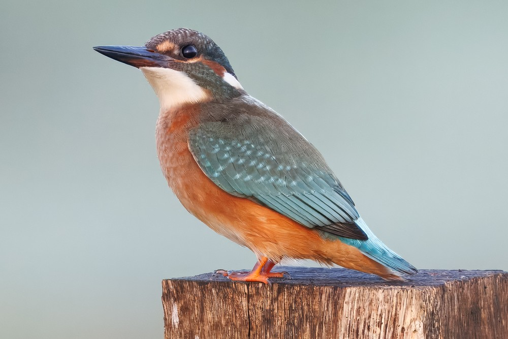
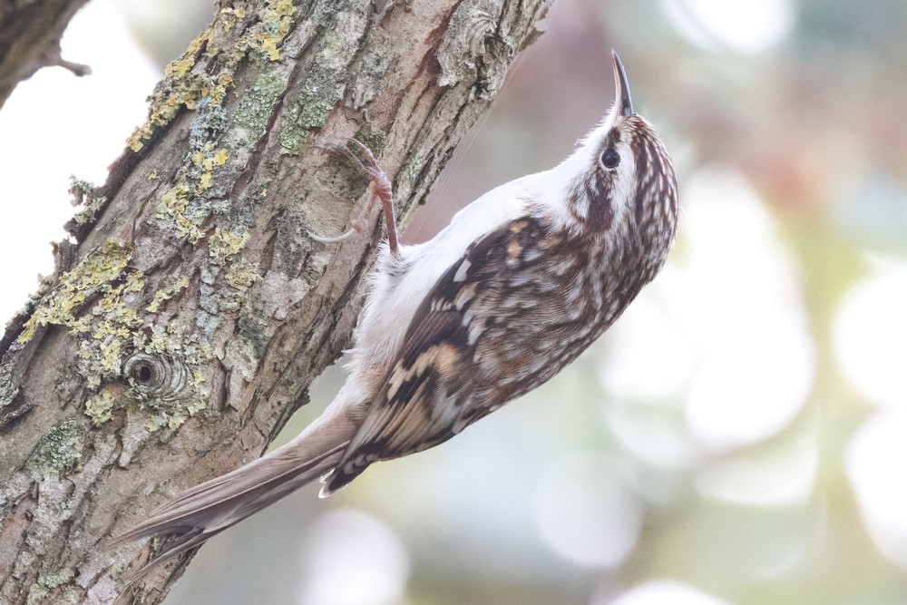
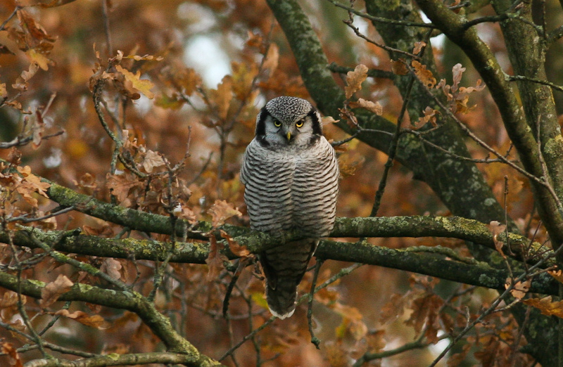
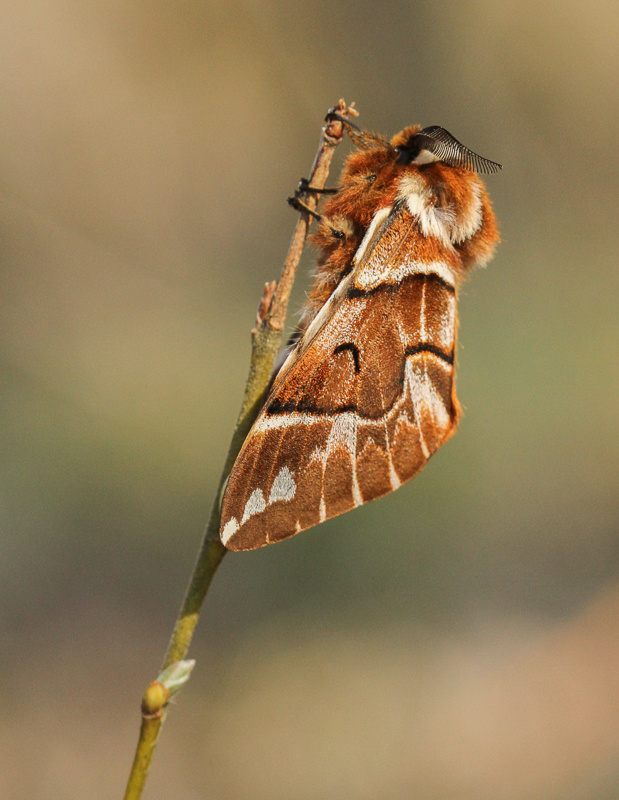
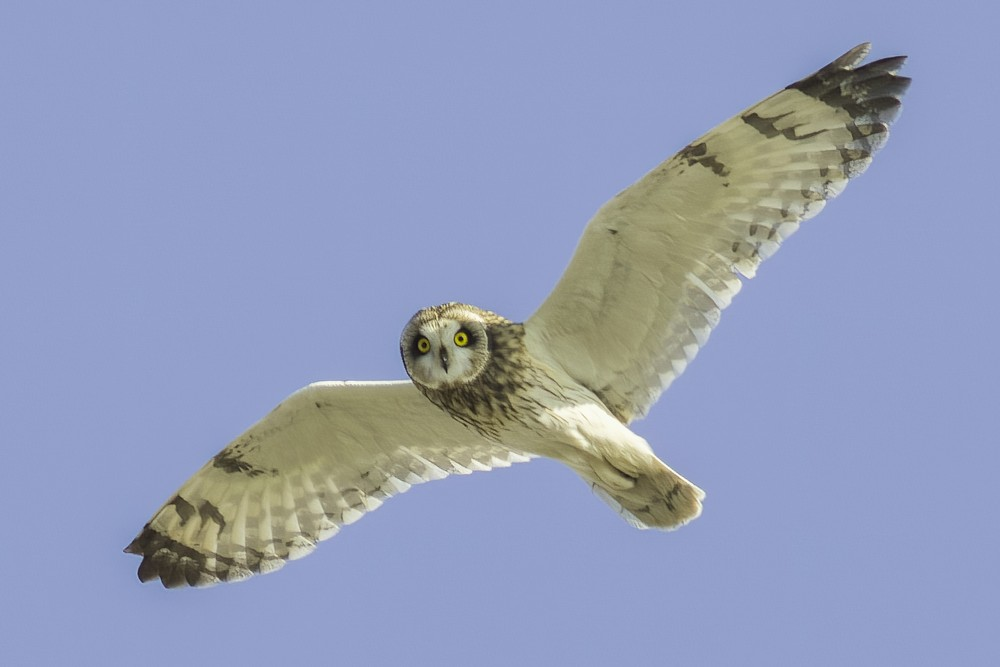
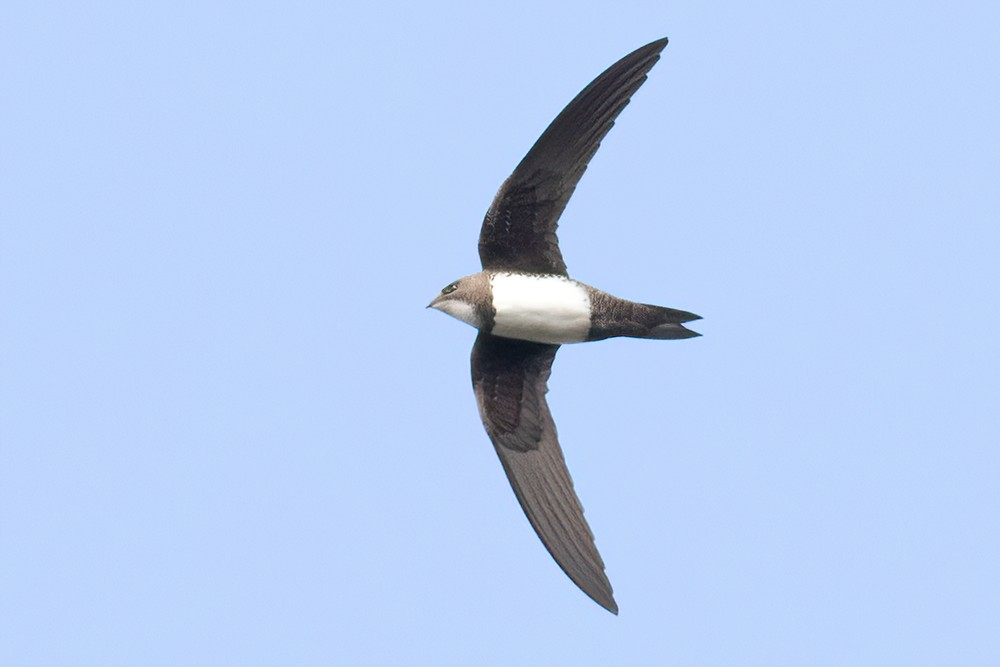
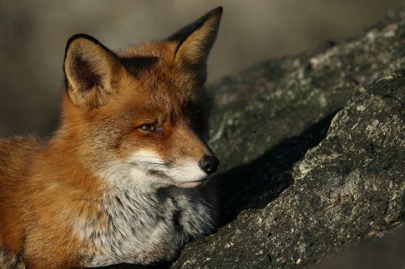
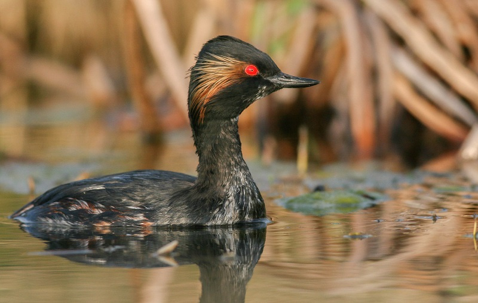
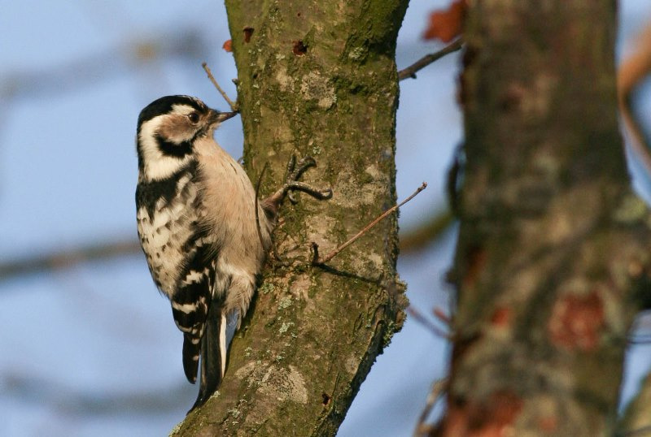

Ecologie, producten, natuurmedia en vogeltools onder één dak
VDH Group brengt een ecologisch adviesbureau, producten voor de vakwereld, natuurkanalen en eigen vogeltools samen. Alles komt voort uit hetzelfde: veel tijd in het veld.
Bekijk de onderdelen

Ecologie
Onderzoek en advies over beschermde soorten en gebieden, van quickscan tot vergunning.



Producten
Diensten en tools voor ecologische bureaus, gebouwd op dezelfde vakkennis.



Natuurmedia
Natuur voor een breed publiek: tips, foto's en verhalen uit het veld.



Vogellab
Eigen gereedschap voor vogelaars, gemaakt voor gebruik in het veld.

Uit het veld
Alle foto's op deze site zijn van Wouter van der Ham.



